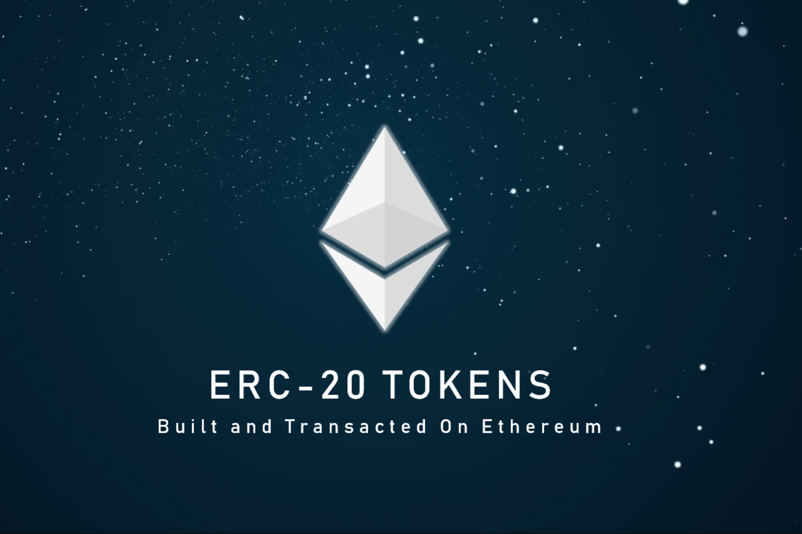
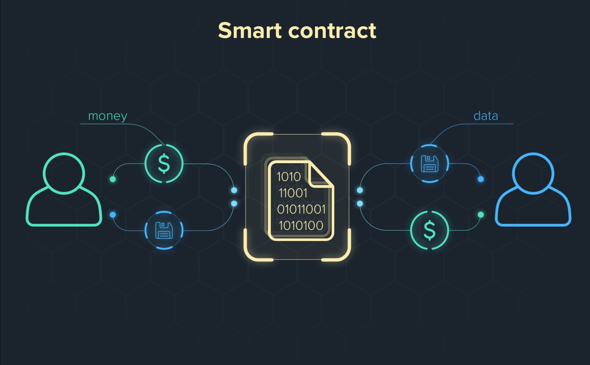

Криптовалюта
Наиболее известное применение блокчейна - в криптовалютах. Криптовалюты - это цифровые валюты (или токены), такие как Bitcoin, Ethereum, Litecoin, которые можно использовать для покупки товаров и услуг. В отличие от наличных денег, криптовалюты используют блокчейн технологии, что позволяет применить криптографию для улучшения системы безопасности, а также регистрировать и защищать все онлайн транзакции.
На сегодняшний день в мире насчитывается более 20 000 криптовалют, общая рыночная капитализация которых составляет около 1 трлн долларов, причем большая часть стоимости приходится на биткоин. Эти токены стали невероятно популярными за последние несколько лет, при этом криптовалюты являются очень волатильным финансовым инструментом.
Основными причинами популярности криптовалюты являются:
Существует множество аргументов против использования криптовалют. Во-первых, рынок криптовалют тяжело регулировать. Многие правительства пользуются криптовалютами, но у большинства из них даже нет законов, которые хотя бы закрепляли положение цифровых валют в финансовой системе. Во-вторых, криптовалюта является невероятно волатильной. Отсутствие стабильности приводит к тому, что некоторые люди обретают целые состояния, оперируя с криптовалютами, а остальные (которых подавляющее большинство), лишь теряют деньги.
В то время как блокчейн-сеть описывает инфраструктуру распределенного реестра, блокчейн-платформа описывает среду, в которой пользователи могут взаимодействовать с блокчейном и его сетью. Блокчейн-платформы масштабируемы и выступают в качестве расширения существующей блокчейн-инфраструктуры, позволяя осуществлять обмен информацией и услугами непосредственно внутри сети.
Примером блокчейн-платформы является Ethereum, программная платформа, на которой размещена криптовалюта Etherium, или эфир. С помощью платформы Ethereum пользователи также могут создавать программируемые токены и смарт-контракты, которые строятся непосредственно на блокчейн-инфраструктуре Ethereum.
В конце 2013 года российско-канадский разработчик Виталик Бутерин опубликовал статью, в которой предлагалась платформа, сочетающая традиционную функциональность блокчейна с одним ключевым отличием: выполнением компьютерного кода. Так родился проект Ethereum.
Сегодня блокчейн Ethereum позволяет разработчикам создавать сложные программы, которые могут взаимодействовать друг с другом через сам блокчейн.
Как и в случае с Биткоином, стоит отметить, что блокчейн Ethereum и криптовалюта Ethereum - это две разные вещи.
Программисты могут создавать токены в сети Ethereum для представления любого вида цифрового актива, могут отслеживать авторство активов и предписывать им различную функциональность.
Токенами могут быть музыкальные файлы, контракты, билеты на концерт или даже медицинские записи пациента. За последние пару лет популярность невзаимозаменяемых токенов (NFT) возросла. NFT - это уникальные токены на основе блокчейна, которые хранят цифровую информацию (например, видео, музыку или произведения искусства). Для каждого NFT возможно проверить подлинность, историю перемещений внутри сети, владельца этого токена. NFT стали невероятно популярны, потому что они дают возможность покупать и продавать свои творения, прямо как на аукционах тех или иных произведений искусства
Что такое смарт-контракт? Это цифровой контракт, который автоматически вводит в действие или документирует соответствующее событие при выполнении определенных условий соглашения. Каждый контракт напрямую контролируется сетью блокчейна. Таким образом, как только контракт выполнен, транзакции по соглашению становятся отслеживаемыми и неизменяемыми. Несмотря на фундаментальность платформы Ethereum, смарт-контракты также могут быть созданы и использованы на блокчейн-платформах, таких как Bitcoin, Cardano, EOS.io и Tezos.
